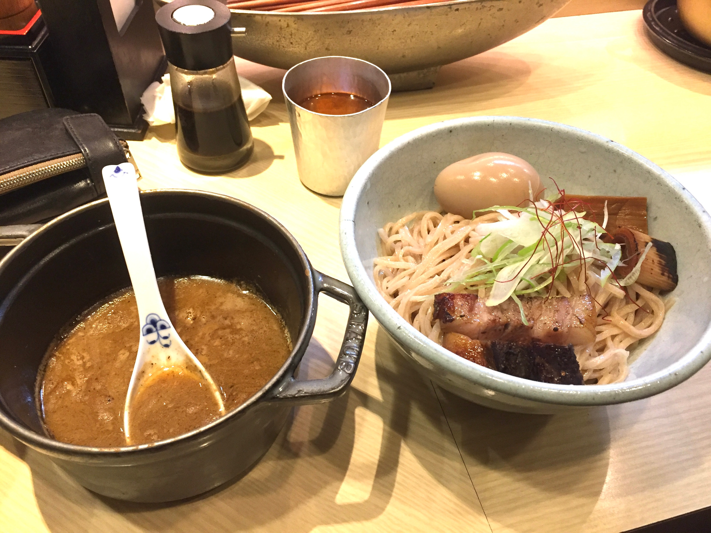

ラーメンが好きな理由
初めてラーメンを食べたときにこんな美味しい食べ物があるのかと思い、中学時代から地元のラーメン屋をリピートしまくっていました。高校・大学になってからは関西のラーメン百名店を開拓したり最低週２は食べていました。関東のラーメン屋は全然知らないのでこれから色々巡りたいと思います。
好きなラーメン TOP3
１.極濃豚骨ラーメン 小僧
スープは豚骨と水だけで引かれた超濃厚なスープでとろみがあり豚骨の旨みとコクが詰まったような濃厚な味わいで香ばしさも感じます。プリモチッとした平打のちぢれ麺はやスープが良く絡み、チャーシューは豚バラが使われておりしっかりとローストされた物と外面だけがローストされた物の二種が使われており香ばしだと肉の美味しさを楽しむ事が出来ます。
２.麺や 高倉二条

系列店「和醸麺屋すがり」「名前、看板はございません」を展開する京都の人気店「麺や高倉二条」。 店内もシンプルでおしゃれなお店で、カウンターの引き出し部分には、香辛料や箸などが隠れています。 濃厚な魚介系のつけ汁は、大きめにカットされたチャーシューが入っており、麺は角が立った中太麺で、モチモチ感のある麺で、熱々のつけ汁との相性も抜群です。
３.世界一暇なラーメン屋
人類みな麺類を手がけるUNCHI株式会社がプロデュースするお店で、都市型ラーメンレストランとして中之島を代表する高層ビルの一つ「中之島ダイビル」にオープン。 5種類のラーメンと1種類のまぜそばがあります。